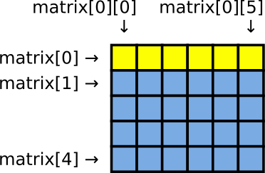

Operátorok, struktúrák
Czirkos Zoltán, Pohl László, Nagy Gergely · 2015.02.18 · Frissítve: 2015.02.19
A switch(), continue és break vezérlési utasítások. Operátorok és kiértékelési szabályok. Struktúrák.
1Múltkor: miért használunk függvényeket?
Függvények
- Az alprogramok nevet kapnak:
prim() - Bemenettel, kimenettel rendelkeznek:
int prim(int szam); - Építőkőként használhatóak (absztrakció):
if (prim(i)) …
Felülről lefelé tervezés
for (i = SZÁMJEGYEK_SZÁMA…-1; i >= 0; i -= 1) // ciklus visszafelé
printf("%c", N_EDIK_SZÁMJEGY…);
Ha vannak ilyen függvényeink, nem is olyan nehéz feladat!
A programnyelvek általában háromféle eszközt adnak a kezünkbe, amelyekkel a programunkat felépíthetjük:
- Primitívek – az alapvető építőkövek
- Kombináció – hogyan lehet belőlük építkezni
- Absztrakció – hogyan kezelhető az építmény építőkőként
Primitívnek számít például egy összeadás. Kombinációnak egy kifejezés: 3+4+5,
ebben több összeadást is kombináltunk. Absztrakciónak egy függvény.
Primitív adatnak egy beépített típus, pl. egy egész szám. Az adatok kombinációjáról már
beszéltünk (lásd: tömbök), absztrakciójáról viszont eddig még nem nagyon volt szó – egészen a mostani előadásig.
Előbb nézzünk még néhány kombinációs lehetőséget.
Újabb vezérlési szerkezetek
3Hátultesztelő ciklus
A ciklusmagot egyszer biztosan le kell futtatni?
Előfordul, hogy egy ciklus törzsét legalább egyszer biztosan le akarunk futtatni, vagy hogy a ciklus feltételének nincs értelme, amíg legalább egyszer a törzse le nem futott. A hátultesztelő ciklusban a ciklusfeltétel ellenőrzése a ciklusmag után történik. Emiatt a ciklusmag legalább egyszer végrehajtódik, tehát az első végrehajtás a feltételtől függetlenül megtörténik. A forráskódban is a feltétel alul van. Ez emlékeztet arra, hogy csak a ciklusmag után ellenőrzi:
do utasítás; while (feltétel);
do {
utasítások…
} while (feltétel);
Példa: 5 darab lottószám – amikor kitalálunk egy újat, megnézzük, volt-e már. Ha igen, újra megpróbáljuk.
int szamok[5];
for (i = 0; i < 5; i += 1) { // 5 darab szám kell
do {
szamok[i] = rand()%90 + 1;
mar_van = 0; // van már ilyen?
for (j = 0; j < i; j += 1)
if (szamok[j] == szamok[i])
mar_van = 1;
} while (mar_van); // ha van, újra!
}
Természetesen a fenti programot egy pillanat
alatt át lehetne írni elöltesztelő ciklusra. Ha elöl
lenne a mar_van tesztelése, csak annyit kellene
tenni, hogy azt a ciklusba belépés előtt IGAZ-ra állítjuk;
mert akkor először biztosan bemegyünk a ciklus belsejébe:
mar_van = 1;
while (mar_van) {
szamok[i] = rand()%90+1;
mar_van = 0; /* nezzuk meg, van-e ilyen */
for (j = 0; j < i; j += 1)
if (szamok[j] == szamok[i])
mar_van = 1;
}
Mi a különbség a kettő között? Az, hogy itt praktikusabb a hátultesztelő, mert egy számot
biztosan kell sorsolnunk. Még egy különbség van: az elöltesztelőnél kvázi trükközni kell, hogy
először bemenjünk a ciklusba, és emiatt tartalmaz egy furcsa kódsort. Az oda nem illő sor a
ciklus előtti mar_van=1 – ez valami olyasmit állít, ami nem igaz. Hogy állíthatjuk
azt, hogy már van olyan szám, ha még nem is sorsoltunk?
A teljes program a lottószámok generálására letölthető innen: lotto.c.
4Spagetti ciklus? break és continue
Ciklus megszakítása: break
break
while (keresés…) {
…
if (megvan)
┌─── break;
│ …
│}
└>
Ciklus folytatása, ciklustörzs kihagyása: continue
continue
┌─> while (vannak feldolgozandó elemek…) {
│ …
│ if (a mostani elem nem kell)
└─── continue;
…
}
Ezek az utasítások nem strukturált vezérlési szerkezeteket
eredményeznek. Vagyis nem felelnek meg sem a szekvenciának, sem a ciklusnak, sem
az elágazásnak. Csak nagyon indokolt esetben használjuk őket! A break
és continue használatára egész félévben gyakorlatilag nem fogunk más
példát mutatni. Legyen az egész félév összes programja példa inkább arra, hogy
nagyon jól meg lehet lenni break és continue nélkül is.
(És főleg goto nélkül!) Ezek amúgy használhatóak for() ciklussal
is. Vigyázat, a következő iteráció a for() ciklus esetében azt jelenti,
hogy a ciklus fejlécében megadott műveletet, az utótevékenységet még végrehajtja!
5Esetszétválasztás: switch()
1. Adatbevitel
2. Módosítás
3. Kimutatás
…
0. Kilépés
Választás: _
if (valasztott==1) {
…
} else if (valasztott==2) {
…
} else {
…
}
A sorozatos if …; else if … kiváltására használható a switch().
Az if() igazságértékre alapozott választás helyett ezzel ún. többszörös választás
vezérlési szerkezetet lehet megadni a programkódban.
Például amikor megkérdezzük a felhasználót, szeretne-e törölni egy fájlt, ötféle választ adhat: kicsi és nagy I betű, kicsi és nagy N betű, vagy valami más:
printf("Töröljem a fájlt? (I)gen vagy (n)em? ");
scanf(" %c", &valasz);
switch (valasz) {
case 'I': /* kis- és nagybetű is jó */
case 'i':
printf("Igent válaszoltál, törlöm!\n");
break; // kiugrás
case 'N':
case 'n':
printf("Nemet válaszoltál, meghagyom.\n");
break;
default:
printf("Érvénytelen válasz!\n");
break;
}
A fenti scanf()-ben a %c előtti
szóköz szándékos. Ez annyit tesz, hogy a karakter beolvasása előtt kapott összes
szóköz, újsor és tabulátor (whitespace) karaktert eldobja.
A switch() szerkezeten belül az egyes értékekhez tartozó, több
utasításból álló kódot nem kell utasításblokkba tenni. Az egész egyetlen egy,
nagy utasítás blokk, amelynek belépési és kilépési pontjait a case-ek
és a break-ek adják meg. Fogalmazhatunk így is: a
case kulcsszavakkal jelölt helyek a switch() utasításon
belüli utasításszekvenciába belépési pontok. Amelyiknek megfelel a
kifejezés értéke, oda ugrik a végrehajtás. Ha nem teszünk break-et
az utasítások után, akkor a végrehajtás továbbmegy a következő belépési pontnál
található utasításokra, és végrehajtódnak azok is! (Ennek az angol neve:
fall-through.) Ezt használjuk ki akkor, amikor több case-t írunk
egymás után: fent a case 'I' után nincs utasítás, de
break sincs.
Emiatt szokás az esetek 99%-ában így használni a switch() szerkezetet.
Minden csoportban előbb a case-ek segítségével felsorolt
lehetőségek, utána az utasítások, végül a break:
switch (kifejezés) {
case érték1: // ha érték1 vagy érték2, kezdd itt
case érték2:
…
break; // ugorj ki itt
case érték4: // ha érték 4, akkor itt kezdd
…
…
…
break; // és itt ugorj ki
default: // ha egyik sem (opcionális)
…
break;
}
A switch() lehetőségei korlátozottabbak annál, mint ami egy
if() – else sorozattal kifejezhető. A legfontosabb megkötés az, hogy
a case kulcsszavaknál megadott értékek csak egész típusúak lehetnek
(ide értve természetesen a karaktereket is, mert azok is egész számok). A
switch() fejlécében használt kifejezésnek is egész számra kell
kiértékelődnie, ez a C nyelvben kötelező. A default ág viszont
elhagyható.
A switch() szerkezettel a legegyszerűbb menürendszert is elkészíthetjük a programunkban. Ebben a felhasználó a
menü sorszámának beírásával választ. A switch() belsejében meghívódik a sorszámnak megfelelő függvény. Az egyes
tevékenységekhez tartozó programkódok sem keverednek így össze, mindegyik külön függvényben van. A visszatérésük után a ciklusban
újból kiíródik a menü, és újra választhat a felhasználó:
void adatbevitel(void) { // első menüpont teendői
/* ... */
return;
}
void kereses(void) { // második menüpont teendői
/* ... */
return;
}
int main(void) {
do {
printf("1. Adatbevitel\n"); // menü kiírása
printf("2. Keresés\n");
printf("0. Kilépés\n");
/* ... */
switch (valasztas) { // a beírt szám alapján
case 1:
adatbevitel();
break;
case 2:
kereses();
break;
}
} while (valasztas != 0);
return 0;
}
7Operátorok: precedencia és asszociativitás
Operátorok: a kifejezések építőkockái
- Pl. matematikai műveletek jelei: +, -, *, /
- Operandusok: amiken a műveletet végzik
Mik az operandusok? – Szabályok
- Több is lehet:
a = -x;unáris (unary),b = x-y;bináris (binary), azaz egy- és kétoperandusú - Precedencia: különfélék „erőssége”, pl.
5+2*3 = 5+(2*3) - Asszociativitás: egyformák csoportosítása, pl.
a/b/c = (a/b)/c
Az operátorok precedenciája és asszocivitása tehát nem azt
határozza meg, hogy egy nagyobb kifejezés melyik részkifejezését értékeli ki
időben előbb a program, hanem csak azt mondják meg, hogy melyik operátornak mi az operandusa.
Pl. egy a*b+c*d kifejezésben mindegy is, hogy előbb az a*b
vagy a c*d részkifejezést értékeljük ki. Ellenben az a/b/c
kifejezés egészen mást jelentene, ha az osztás jobbról balra lenne asszociatív, mert
akkor a/(b/c)-t értenénk alatta, ami viszont nem ugyanazt az eredményt adja.
8Polimorfizmus és konverziók
Előfordulhat az, hogy egy operátor többféleképp működhet?
int a = 5, b = 2;
double c = 5, d = 2;
double x;
x = a / b;
printf("%g\n", x); // 2
x = c / d;
printf("%g\n", x); // 2.5
x = (double)a / b;
printf("%g\n", x); // 2.5
x = a / (double)b;
printf("%g\n", x); // 2.5
Polimorfizmus (többalakúság)
Az operátorok jelentése függhet az operandusok típusától:
a/b: osztás. Haaésbisint, egész osztás, ami lefelé kerekít!- Ha bármelyik lebegőpontos, az eredmény is az.
Az egész osztás sok esetben hasznos. Lásd a bankautomatás
feladatot: ha az a kérdésünk, hogy 5500 Ft kifizetéséhez hány ezresre van szükségünk.
5500/1000 = 5 darab ezres, és 5500%1000 = 500 Ft a maradék, amelyet
máshogy kell megoldanunk, nem ezresekkel.
Ha valamelyik operandus valós, a másik automatikusan valóssá konvertálódik.
Automatikus konverzió egyéb
esetekben is történik. Pl. short+int összeadás esetén a
short típusú operandus a nagyobb ábrázolási tartományú
int típusúvá konvertálódik. Ugyanígy,
int+long esetén az összeadás előtt az int
konvertálódik automatikusan, az 5+2.3 kifejezésben pedig
az 5-ből lesz 5.0. Mindig a nagyobb ábrázolási tartomány
felé történik az automatikus konverzió, hogy ne amiatt legyen adatvesztés
vagy túlcsordulás.
Kézi konverzió (cast)
- Ha két
intvan, de lebegőpontos osztást szeretnénk, jelezni kell - Konverziós (cast) operátort használva:
(double) x
Fontos megfigyelni, hogy jobb oldalt látható kódban az x=a/b kifejezésben
az eredmény még így is 2, hogy utána azt a double x
változóba másoljuk! Az értékadás egy újabb operátor, amelynek az osztás eredményébe
már nincsen „beleszólása”. Az osztás egész/nem egész jellege nem azon múlik, hogy az
elvégzése után mit csinálunk az eredménnyel! Ha az osztás valamelyik operandusát
lebegőpontos számmá alakítjuk azáltal, hogy elé a (double) operátort
írjuk, már nem egész osztás fog történni. A konverziós operátorok nagyon magas
precedenciájúak: mindig közvetlenül arra az értékre vonatkoznak, amelyek elé írjuk őket.
A konverzió segítségével más típusúvá alakítható egy érték. Egy lebegőpontos
érték elé (int)-et írva egésszé alakítható az, természetesen a törtrészt
elveszítve. Számtani műveletek esetén ritkán kell kézi konverziót alkalmazni. Más típusoknál, a
mutatóknál, amelyek egy későbbi előadáson fognak szerepelni, nagyobb szerepet kapnak a
konverziók. De ezekről majd később.
9Operátorok: érték és mellékhatás
Emlékeztető: függvények értéke és mellékhatása
int szovegelos_osszeg(int a, int b) {
printf("Összeadom: %d és %d\n", a, b); // mellékhatás
return a + b; // érték
}
- Érték: a függvényhívás kifejezésnek értéke van
- Mellékhatás: minden változás, aminek nyoma van, pl. kiír valamit
Operátoroknál
- Érték: a kifejezésnek értéke van, amellyel helyettesítődik
- Mellékhatás: történhet más is, pl. megváltozik egy változó értéke
Ne feledjük, hogy a mellékhatás a programozásban nem jelent
rosszat. A printf() függvényt épp a mellékhatása miatt használjuk.
10Operátorok mellékhatásai
Összeadás, a + b
- Érték: az összeg, mellékhatás: nincs
Értékadás, a = b
- Mellékhatás:
bértékea-ba másolódik - Érték: az egész
a = bkifejezés értéke a másolt érték - Balérték=jobbérték (lvalue=rvalue).
Jobbérték: ami kiértékelhető, balérték: aminek érték adható.
a = b = 1; a = (b = 1); // ugyanazok b = 1; a = b;
a = b;
printf("%d", a);
printf("%d", a = b); // neeeee
Vegyük észre, hogy a mellékhatással nem
rendelkező operátorokkal leírt képletek mindig ugyanazt az eredményt
adják! 5*2+4 mindig 14 lesz; míg pl.
a+=1-ről ez nem mondható el, hiszen többször egymás
után kiértékelve mindig más eredményt kapunk. Az =
operátort a mellékhatása miatt használjuk, az értékével ritkán
törődünk. Az utóbbi viszont lehetővé teszi a láncolt értékadást: pl.
az a=b=c=0 kifejezés mindhárom változót nullázza. Akár
kifejezőbb is lehet, mint külön leírni mind a három nullázást.
Az értékadás kifejezés értéke miatt olyanokat is lehet írni, mint a
fenti printf – de nem érdemes. Az ilyesmi csak zavart okoz. Bár a
fordító által készített gépi kód úgyis teljesen ugyanaz lesz, inkább kerüljük a
felesleges tömörítést! Jobb külön, két sorba leírni a két, egymástól logikailag
független teendőt (értékadás, kiírás).
A balérték, jobbérték kifejezéseket ismerni kell, mert a
fordító hibaüzeneteiben gyakran megjelennek. Például az 5=6
kifejezésre az „lvalue required as left operand of assignment” jelzést kapjuk,
vagyis hogy az értékadás bal operandusaként egy balérték kell szerepeljen.
Ugyanígy helytelen emiatt az 5=a kifejezés is.
A fentiek érvényesek az összes kombinált értékadó
operátorra is: +=, -=, |=, >>= stb.
11Feltételes kiértékelés: a ?: operátor
A „3 operandusú operátor” (ternary operator)
- Formája:
feltétel ? igaz_kif : hamis_kif - Értéke: mint Excel-ben a
HA()függvény, ha igaz a feltétel,igaz_kif, különbenhamis_kif
if (x < 0)
y = -x;
else
y = x;
helyett:
y = x<0 ? -x : x;
if (a > b)
nagyobb = a;
else
nagyobb = b;
helyett:
nagyobb = a>b ? a : b;
Ezt az operátort kérdőjel–kettőspont operátornak, vagy feltételes operátornak szokás nevezni. Néha, főleg angol nyelvű szakirodalomban három operandusú operátornak is nevezik, mivel ez az egyetlen, amelyiknek három operandusa van.
12A ++ és -- értékadó operátorok
A ++ és -- operátorokat inkremens (increment) és dekremens (decrement)
operátoroknak nevezzük, és az értékadó operátorok közé tartoznak.
Jelentésük „következő” és „előző”. Mindkét operátornak két változata van,
egy poszt (post) és egy pre forma. A kettőt az különbözteti meg, hogy az
operátort a változó neve elé vagy mögé írjuk: az a++ kifejezés a posztinkremens operátort, a
++a pedig a preinkremenst használja.
A mellékhatása mindkét alaknak ugyanaz. A ++a és az
a++ kifejezés is megnöveli az a változót eggyel. De míg
a posztinkremens kifejezés értéke még régi, növelés előtti állapotot
mutatja (poszt, kiértékelés után növelés), a preinkremensnél a kifejezés értéke a
már megnövelt értékkel lesz egyenlő (pre, azaz kiértékelés előtt
növelés). Ezt onnan lehet megjegyezni, hogy a posztinkremensnél: a++
az operátor a változó neve után van, vagyis előbb vesszük az értékét, és
később növeljük, a preinkremensnél a változó neve előtt.
Ennek megfelelően, ha a kifejezések értékét is használjuk, a két forma eltérően írható át külön utasításokra:
Preinkremens kifejezés kifejtve
/* tömören */
a = 5;
printf("%d", ++a); /* 6-ot ír ki */
/* részletesen */
a = 5;
a += 1; // előre megnöveli
printf("%d", a);
Posztinkremens kifejezés kifejtve
/* tömören */
a = 5;
printf("%d", a++); /* 5-öt ír ki */
/* részletesen */
a = 5;
printf("%d", a);
a += 1; // csak utólag nő
A dekremens párjaik ugyanígy működnek. Az alábbi programot csak ki kell próbálni, mindent megmutat:
#include <stdio.h>
int main(void) {
int a;
a = 5;
printf("előtte: %d\n", a);
printf("értéke: %d\n", ++a);
printf("utána: %d\n", a);
printf("\n\n");
a = 5;
printf("előtte: %d\n", a);
printf("értéke: %d\n", a++);
printf("utána: %d\n", a);
return 0;
}
13A ++ és -- tipikus használata
Ciklusban vagy önmagában
i += 1;
++i;
for (i = 0; i < 100; ++i) …
Nem használjuk az értékét. Itt mindegy, melyik formát írjuk.
Tömb feltöltése
szamok[db++] = szam_beolvas();
| 0. | 1. | 2. | 3. | 4. |
|---|---|---|---|---|
| 12 | 43 |
Posztfix: a darabszám régi értéke az index; oda beírjuk, utána növeljük.
Pl. ha db = 2, az új elem szamok[2] helyre kerül, utána db = 3 lesz.
Ami pont stimmel, hiszen az 5 elem a szamok[0]…szamok[4] helyeken van.
Vegyük észre: kényelmes dolog, hogy 0-tól számozódnak a tömbindexek!
14A rövidzár tulajdonság
Vajon mindig kiszámolja a program, amit egy kifejezésben írunk?
A logikai &&, || rövidzár tulajdonsága
Ha a bal oldal alapján eldől az eredmény, a jobb ki sem értékelődik!
A && B: ha A=HAMIS, nem számít B, az egész biztosan HAMISA || B: ha A=IGAZ, a kifejezés értéke biztosan IGAZ- Ha kiderül az elsőből az eredmény, a másodikat nem értékeli ki
if (b != 0 && a/b > 3) // elkerüljük a 0-val osztást!
A ?: feltételes operátor rövidzár tulajdonsága
z = x>y ? x++ : y++; // neeee
A rövidzár tulajdonság olykor hasznos, de mellékhatásokkal kombinálva veszélyes, mert áttekinthetetlen,
érthetetlen programokhoz vezet. Ilyen a fenti is. Első ránézésre úgy tűnik, hogy mindkét változó értéke megnő eggyel.
De ez nem igaz, hanem a kettő közül csak a nagyobbik fog nőni, mert x>y esetén csak az x++, amúgy
csak az y++ kifejezés értékelődik ki, és csak annak a mellékhatása történik meg.
Lehetőleg kerüljük az ilyesmit, ne írjunk ilyeneket! Ne használjunk olyan kifejezést a rövidzár
tulajdonsággal rendelkező operátorok operandusaként, amelynek mellékhatása van!
15A vessző operátor
Több kifejezés egymás utáni végrehajtása egy kifejezésben; értéke az utolsó kifejezés értéke.
Leggyakrabban for ciklus fejlécében:
példa
unsigned int i, j;
for (i = 0, j = 1; i < 4; i++, j <<= 1)
printf("Kettő %u. hatványa: %u\n", i, j);
Kettő 0. hatványa: 1 Kettő 1. hatványa: 2 Kettő 2. hatványa: 4 Kettő 3. hatványa: 8
Vigyázat:
1. függvényhívás paraméterei: az nem vessző operátor!
2. Logikai ÉS, VAGY operátorok helyett ne használjuk: mást jelent!
Tipikus hiba ciklusfeltételbe vesszőt írni valamelyik logikai operátor helyett:
while (oszto < szam, !vanoszto) { // HIBÁS!
...
}
Ez a C számára nem azt jelenti, hogy „amíg osztó kisebb számnál ÉS nincs osztó”,
hanem azt, hogy „amíg nincs osztó”. A vessző operátor kiértékeli a bal oldali részkifejezést
(szám és osztó összehasonlítása), utána ezt eldobja, és a ciklus feltételének a
!vanoszto értékét tekinti. Tehát oszto>=szam esetén is
fut tovább a ciklus!
16Függvény paramétereinek kiértékelése
#include <stdio.h>
int egy() {
printf("egy\n");
return 1;
}
int ketto() {
printf("ketto\n");
return 2;
}
int main(void) {
printf("%d %d\n", egy(), ketto());
return 0;
}
Ez a program a fentieket szemlélteti. A kimenet például ez lehet:
ketto egy 1 2
A main() printf() függvényhívása előtt elő kell
állítani annak paramétereit. Itt a program előbb a jobb oldali paramétert
értékelte ki, ezért íródott ki előbb a ketto szöveg. Vegyük észre,
hogy itt is egy mellékhatással állunk szemben; a ketto() függvény
mellékhatása a képernyőre írás! Mivel a függvény paramétereinek kiértékelési
sorrendjét a fordító szabadon megválaszthatja, a mellékhatások esetleg a nem várt
sorrendben történhetnek meg. A számjegyek azonban biztosan 1 2
sorrendben fognak látszani, mert azok sorrendjét a printf()-nek adott
paraméterek sorrendje határozza meg, nem pedig a paraméterek kiszámolásának
sorrendje.
A fenti példa alapján látható, miért veszélyes egy ilyen programrész:
/* beolvas egy számot a billentyűzetről */
int beolvas(void);
/* kivonás */
printf("A különbség: %d", beolvas()-beolvas());
Nem tudhatjuk, hogy a bal vagy a jobb oldali beolvas() fog
először meghívódni, vagyis hogy a program a kisebbítendőt vagy a kivonandót kéri
először. Ezt úgy lehet javítani, hogy külön kiértékelési pontokat vezetünk be:
a = beolvas(); /* kiértékelési pont! */
b = beolvas(); /* ez is! */
printf("A különbség: %d", a-b);
Így már biztosan az első beírt szám a kisebbítendő és a második a kivonandó.
17Mik azok a kiértékelési pontok?
A mellékhatások kiértékelési pontokig (sequence point) érvényesülnek.
- Utasítás végén:
;vagy}if,while,forfeltétele után- Néhány operátornál menet közben:
?:és&&és||és a,- Függvényhívás előtt az összes paraméter kiértékelődik
„A szabvány által nem definiált”
- A kiértékelési pontok között a mellékhatások sorrendje kötetlen!
- A függvényparaméterek kiértékelési sorrendje kötetlen
- Ha kell, több utasításba szedéssel, segédváltozók használatával kényeszeríthetjük a sorrendet.
- Helytelen:
a = a++; - Viszont helyes:
while (scanf("%c", &c) == 1 && c != '\n')
Ne írjunk olyan kódot, ahol többször használjuk egy változó értékét, amelyre mellékhatás is van! Be kell tartani a következő szabályokat:
- Ne zsúfoljunk egy kifejezésbe több mellékhatással rendelkező műveletet!
- Ne keverjük a mellékhatással rendelkező és a rövidzáras operátorokat!
- Ne tegyünk az
if,while… utasítások feltételébe fölöslegesen mellékhatás kifejezést!
Ilyenekre úgysem lesz szükség programozás közben. Ha mégis megsértjük ezeket a szabályokat, nemcsak azt kockáztatjuk, hogy követhetetlen és olvashatatlan lesz a programunk, hanem azt is, hogy egyszerűen nem fog működni. Különböző fordítók (de még akár ugyanaz a fordító is, más beállítások mellett) másképpen fogják értelmezni a kódot! Ettől nem rossz a C. Sőt emiatt lehet gyors, és emiatt van minden elképzelhető fajta számítógépre C fordító. Csak be kell tartanunk a játékszabályokat.
A fentiek miatt nemcsak értelmetlen, hanem még hibás is az a = a++; utasítás.
Ez nem csak amiatt rossz, mert a ++ operátornak amúgy is van
mellékhatása (az már amúgy is megváltoztatja az a változót), hanem
mert nem lehet megmondani, mi lesz az eredménye. Itt egy kifejezésen belül,
tehát ugyanazon kiértékelési pont előtt az a változót két mellékhatás
is érinti. Az egyik az értékadó operátor mellékhatása, a másik pedig a posztinkremens
operátoré. Ezekről nem lehet tudni, hogy milyen sorrendben fognak megtörténni. Ha
előbb az értékadás történik meg, utána az inkrementálás, akkor a értéke
megnő eggyel. Ha előbb az inkrementálás, és csak utána az értékadás, akkor a
értéke nem változik, mivel a posztinkremens kifejezés értéke a változó növelés
előtti értéke.
A kiértékelési pontok ismeretében már azt is könnyű megmagyarázni, miért csinálja ugyanazt az alábbi két programrész (gyakori félreértés, hogy más számokat eredményeznek):
for (i = 1; i <= 10; i++)
printf("%d ", i);
for (i = 1; i <= 10; ++i)
printf("%d ", i);
Hiába van posztinkremens az egyik, preinkremens a másik ciklusban, mind a kettő 1-től
10-ig írja ki a számokat. Ez azért van, mert az utasítások mindkét esetben
önmagukban állnak, két kiértékelési pont között. Az egyik kiértékelési pont a ciklustörzs
vége után van (akkor fog végrehajtódni az i++ vagy a ++i), a másik
kiértékelési pont pedig a ciklusfeltétel ellenőrzése előtt (mire ott az i változó
értékét vizsgálja majd, addigra a mellékhatás biztosan megtörténik).
19Emlékeztető: típusok
(1. előadás)
Típus: értékkészlet és hozzá tartozó műveletek.
Egyszerű, beépített típusok:
- Egész számok:
int,long intstb. - Lebegőpontos számok:
float,double - Karakterek:
char - Logikai:
int
Összetett, származtatott típusok:
- Tömb: egyforma típusú elemek sorszámozott tárolója
- Pl.
int t[10]→t[0]…t[9], 10 darab egész szám - Speciális tömb a sztring: karakterek végjeles sorozata
- Pl.
- Struktúra: összetartozó adatok – erről lesz most szó.
20Hogyan tároljunk törteket?
Racionális számok
Tegyük fel, hogy egy olyan programot kell készítenünk, amely racionális számokkal dolgozik. Hogy ezeket pontosan tudjuk tárolni, a lebegőpontos tárolás ötletét elvetjük: mindig külön tároljuk a számlálót és a nevezőt, két egész típusú változóban. Ahogy írjuk a programot, azonban egyre bonyolultabb kifejezéseink lesznek; egyre nehezebb lesz követni, hogy melyik törtes műveletet mely változókon kell elvégezni. Pl. az alábbi művelet:
┌ a c ┐ ┌ e g ┐ ad+cb eh+gf (ad+cb)(eh+gf) ─ + ─ · ─ + ─ = ───── · ──── = ────────────── └ b d ┘ └ f h ┘ bd fh bdfh
össze?!
Kódban ez így nézne ki:
i = (a*d+c*b)*(e*h+g*f); j = b*d*f*h;
Még ha be is vezetünk valami konvenciót a jelölésre (pl. asz és an
az a tört számlálója és nevezője), akkor is elég reménytelennek tűnik a helyzet.
Két tört számlálója és nevezője – ez se sokkal jobb:
int asz, an, bsz, bn; // a és b tört, számlálók és nevezők
Mi hiányzik nekünk? Az adat absztrakciója! Az hiányzik, hogy az adattípusokból ugyanúgy tudjunk építkezni, ahogyan az algoritmusoknál a függvényekkel is tettük. Legyen olyan nyelvi elem, amely segítségével több összetartozó adatot egységként kezelhetünk, és néven is nevezhetjük az így kialakult adatcsomagot.
21Struktúrák létrehozása
Definíció szintaxisa
struct név { definíció
T1 mező1, mező2, …;
T2 mező3;
…
}; pontosvessző!
Definíció és példányosítás
struct Pont {
double x, y;
};
struct Pont p1, p2;
Az egyes mezők deklarációjának
szintaktikája megegyezik a változók deklarációinak szintaktikájával: Típus név;.
Csak itt nem változó lesz belőlük, hanem egy struktúra adattagjai lesznek.
T1, T2… bármilyen, már létező típusok lehetnek. A struktúra neve is bármi lehet, ami még nem foglalt.
Hasonlóan, a mezők különböző nevűek kell legyenek – azonban az megengedett, hogy különböző struktúrák
ugyanolyan mezőneveket tartalmazzanak. Pl. a Pont2D struktúra mezői lehetnek x és y, a Pont3D struktúra
mezői pedig x, y és z.
Mezőkre (adattagokra) hivatkozás
p pont: (3;6)
struct Pont p;
p.x = 3; // az x koordinátája legyen 3
p.y = 6;
printf("p pont: (%f;%f)", p.x, p.y);
A struktúra mezőkből áll, más néven: tagok vagy adattagok (member).
Adott mezőre ponttal hivatkozunk: változó.mezőnév. Pl.
p.x jelentése: a p pont x koordinátája.
Ebben p típusa struct Pont, p.x típusa pedig double.
Egy adattag teljesen ugyanúgy tud viselkedni, mint bármelyik másik változó: érték adható neki, kifejezésekben
szerepelhet, printf() kiírja, scanf() beolvassa. Sajnos ez utóbbi
függvények a struktúrát, mint egészt, nem tudják kezelni.
22Használhatom, ahogy egy „sima” változót?
Értékadás
struct Pont p1, p2; p1 = p2;
A struktúra értékadás minden mezőt másol: a fenti példában p1.x=p2.x; p1.y=p2.y;.
Függvény paramétere, visszatérési értéke
/* megadja a pont origótól mért távolságát */
double origo_tavolsag(struct Pont p) {
return sqrt(p.x*p.x + p.y*p.y);
}
/* megadja a szakaszfelezőt */
struct Pont szakaszfelezo(struct Pont p1, struct Pont p2);
struct Pont a;
printf("%f", origo_tavolsag(a));
Struktúra lehet függvény paramétere és visszatérési értéke is. A paraméterátadás szabályai ugyanazok, mint az egyszerű típusoknál: ha változót adunk át, akkor a függvény csak a változó értékét fogja látni, az eredeti változót nem. Tehát nem tudja megváltoztatni azt.
23Struktúrák kezdeti értéke
!=
értékadás!
Struktúrák inicializálása
struct Pont {
double x, y;
};
struct Pont p1 = { 2, 5 }; // inicializálás: p.x←2 és p.y←5
Az egyes értékek a definíció sorrendje szerint meghatározott módon kerülnek a mezőkbe. Vigyázni kell, ha megváltoztatjuk a sorrendet!
Nagyon fontos megérteni az értékadás és az inicializálás közötti különbséget. Az inicializálás azt jelenti, hogy egy éppen definiálás alatt lévő változónak megadjuk a kezdeti értékét; az értékadás pedig az, hogy egy már létező, régebben létrejött változónak adunk valami új értéket. A kettő nem ugyanaz, csak mindkettőt szintaktikailag az egyenlőségjellel kell jelezni.
C99-ben (sajnos nem minden fordító eszi)
struct Pont p2 = { .x = 2, .y = 5 }; /* inicializálás */
p2 = (struct Pont) { 2, 5 }; /* értékadások */
p2 = (struct Pont) { .x = 2, .y = 5 };
A C nyelv újabb (C99 szabvány utáni) változataiban ilyet is lehet írni.
Sajnos ezt nem minden fordító támogatja. Sőt, C++-ban ez teljesen szabálytalan, úgyhogy ne
ezt szokjuk meg; csak azért szerepel itt, ha találkoztok vele valahol, tudjátok, mit jelent.
A fenti inicializálás egyébként kiváltható a .x és .y nélküli formával,
ahol a definíció sorrendjét használjuk; a lentebbi értékadások pedig a mezőknek
egyesével értékadással:
p2.x = 2; p2.y = 5;
24A typedef kulcsszó
A typedef kulcsszóval egy típusnak adhatunk új nevet:
typedef int Egesz; // meglévő név és új név typedef char Betu; Egesz x; // x egész, vagyis int Betu b;
A typedef kulcsszóval egy meglévő típusnak
adhatunk egy új nevet. Olyan nevet érdemes adni, amelyik számunkra beszédesebb és
jobban kifejezi az adott típus szerepét. Itt is hasonló a szintaktika, mint a
változó deklarációjánál: előbb a típus, utána a név. Csak a névből nem változó
neve lesz, hanem a típusnak egy másik neve.
Struktúráknál gyakran használjuk:
struct Pont {
double x, y;
};
typedef struct Pont Pont;
Pont p;
typedef struct Pont {
double x, y;
} Pont;
Pont p;
Mindkét forma ugyanazt jelenti.
A struktúrák esetén leginkább arra használjuk, hogy spórolni
lehessen a gépeléssel: typedef struct Pont Pont
után nem kell mindig kiírni, hogy struct Pont, elég
annyit, hogy Pont. Lustaság, fél egészség. A jobb oldalt látható
szintaktikával a struktúra definíciója és az új név megadása
összevonható. Ilyenkor a sturktúrának nem is lenne kötelező
nevet adni, vagyis az első Pont szó elhagyható lenne.
Ilyennel is gyakran találkozni C programokban. A struktúra
maga ilyenkor névtelen (anonymous structure):
typedef struct {
double x, y;
} Pont;
A struktúra neve (Pont), és a typedef segítségével adott
név nem kötelezően egyforma. De ha nem így teszünk, csak összevisszaságot
okozunk vele, úgyhogy érdemes úgy megadni, hogy egyformák legyenek.
25Típusok láthatósága: lokális és globális
A típusokat általában globálisan adjuk meg: mindenhol látszódjanak.
/* globálisan */
typedef struct Tort {
int szaml, nev;
} Tort;
int fuggveny() {
Tort t1, t2; // látható
}
int masik_fuggveny() {
Tort b; // ez is
}
/* lokálisan */
int fuggveny() {
typedef struct Tort {
int szaml, nev;
} Tort;
Tort t1, t2; // látható
}
/* Ez így HIBÁS! */
int masik_fuggveny() {
Tort t; // ismeretlen!
}
A saját típusainkat definiálhatjuk lokálisan és globálisan. A típusok általában azért globálisak, mert a programunk adatai azokon belül több helyen is előkerülnek. Vagyis több függvényben is. Ennek ellenére természetesen lehetséges az, hogy egy adott típus csak egy függvényen belül létezik. Ha csak ott használjuk, akkor érdemes lokálisan megadni, mert akkor követhetőbb a program mások számára.
26Törtes példa: komplex feladat
─
3
Racionális számok
Feladat: a C nyelv nem tartalmaz tört típust. Hozzunk létre egyet! Írjuk meg az ezeket összeadni, szorozni, kiírni tudó programrészeket!
Megoldás
- Ez új típus! Saját értékkészlet és műveletek!
- Összetartozó adatok is. Ezért ez egy struktúra lesz!
- A műveletek pedig függvények.
A törtek struktúrája
typedef struct Tort { // függvényen kívül: globális
int szaml, nev;
} Tort;
int main(void) {
Tort t1; // a typedef miatt elég annyi, hogy Tort
t1.szaml = 1; // 1/2
t1.nev = 2;
return 0;
}
Mivel a struktúrát több függvény is használja, globálisan definiáljuk.
Tört kiírása
A printf() nem ismeri a tört típust, ezért
a kiírást nekünk kell megoldanunk. Ezt szeretnénk:
Tort t1; t1.szaml = 2; t1.nev = 3; tort_kiir(t1); // 2/3 jelenjen meg
A függvény nem tér vissza semmivel, csak kiírja a törtet.
/* Kiírja a törtet számláló/nevező alakban */
void tort_kiir(Tort t) {
printf("%d/%d", t.szaml, t.nev);
}
Tört valós értéke
Szükségünk lehet a tizedes törtre is:
Tort x = {2, 3};
printf("%f\n", tort_valos(x)); // 0.666667
A függvény egy törtből csinál double típusú lebegőpontos számot.
/* Visszatér a tört lebegőpontos értékével */
double tort_valos(Tort t) {
return (double)t.szaml / t.nev;
}
Vigyázni: ne egész osztást végezzünk! Különben 1/2 = 0.
Törtek összeadása
osszeg = tort_osszead(a, b);
A szorzat lehet közös nevező. Két törtet összegző függvény:
a c ad+cb ─ + ─ = ───── b d bd
/* visszatér a két tört összegével */
Tort tort_osszead(Tort t1, Tort t2) {
Tort uj;
uj.szaml = t1.szaml*t2.nev + t2.szaml*t1.nev;
uj.nev = t1.nev*t2.nev;
return uj;
}
Törtek összeadása – eredmény?!
Itt tartunk most:
#include <stdio.h>
typedef struct Tort {
int szaml, nev;
} Tort;
void tort_kiir(Tort t);
Tort tort_osszead(Tort t1, Tort t2);
int main(void) {
Tort x={1, 2}, y={1, 4};
tort_kiir(tort_osszead(x, y));
return 0;
}
void tort_kiir(Tort t) {
printf("%d/%d", t.szaml, t.nev);
}
Tort tort_osszead(Tort t1, Tort t2) {
Tort uj;
uj.szaml = t1.szaml*t2.nev
+ t2.szaml*t1.nev;
uj.nev = t1.nev*t2.nev;
return uj;
}
A program futási eredménye:
6/8
Ez helyes is, és nem is. Helyes, mert 6/8 az 3/4, és az összeg tényleg annyi. De lehetne jobb is, ha a program egyszerűsíteni is tudna.
Tört létrehozása – egyszerűsítve!
x = tort_letrehoz(50, 100); // 1/2
Nagyon fontos itt a függvény filozófiája. A két egész szám összerakva nem csak egyszerűen két egész szám együtt, hanem egy tört. Speciálisabb, mint egy sima számpár. Ezért amikor egy törtet „építünk”, azaz létrehozunk két egész számból, akkor el kell végeznünk egy egyszerűsítést rajta. Az egyszerűsített tört egyenértékű az összes bővített változatával. Innentől kezdve, hogy ez a függvényünk megvan, mindig ezt fogjuk használni akkor, amikor egy számlálóból és egy nevezőből létrehozunk egy törtet. Így minden törtünk egyszerűsítve lesz! Sőt aki a törtes függvényeinket használja, annak is azt javasoljuk, hogy minden törtet ezzel a függvénnyel hozzon létre, ne pedig struktúra inicializálással vagy pedig „kézi” értékadással külön a számlálónak és a nevezőnek. Így neki sem kell törődnie majd az egyszerűsítéssel.
/* Törtet hoz létre, egyszerűsítve */
Tort tort_letrehoz(int szaml, int nev) {
Tort uj;
int a = szaml, b = nev;
while (b!=0) { // Euklidész
int t = b; b = a%b; a = t;
}
uj.szaml = szaml/a;
uj.nev = nev/a; // legnagyobb közös osztó = a
return uj;
}
Az euklidészi algoritmus megkeresi két szám legnagyobb közös osztóját. Ezzel osztva a számlálót és a nevezőt megkapjuk az egyszerűsített törtet.
Törtek összeadása és szorzása – most már helyesen
/* műveletek törtekkel */ osszeg = tort_osszead(a, b); szorzat = tort_szoroz(a, b);
Az összeadást és a szorzást megvalósító függvények:
/* Visszatér a törtek összegével. */
Tort tort_osszead(Tort t1, Tort t2) {
return tort_letrehoz(t1.szaml*t2.nev + t2.szaml*t1.nev,
t1.nev*t2.nev);
}
a c ac ─·─ = ── b d bd
/* Visszatér a törtek szorzatával. */
Tort tort_szoroz(Tort t1, Tort t2) {
return tort_letrehoz(t1.szaml*t2.szaml,
t1.nev*t2.nev);
}
Az összeadás most már elvégzi az egyszerűsítést
is, hiszen a törtet létrehozó függvény tartalmazza azt is. Egyszerűbb
lett a függvény, hiszen a lokális változóra sincsen már szükség. Amit
a tort_letrehoz() visszaad, azt passzolja is tovább a
hívónak. A szorzás ugyanígy működik programozásilag, és a többi művelet:
kivonás, osztás sem különböző.
Tört beolvasása
Olvassunk be egy törtet a billentyűzetről:
Írd be a törtet:
6/8_
Tort t; t = tort_beolvas();
/* beolvas egy törtet a billentyűzetről, és visszaadja */
Tort tort_beolvas(void) {
int szam, nev;
scanf("%d / %d", &szam, &nev);
return tort_letrehoz(szam, nev);
}
Mi történik, ha nem számot ír be? Ha 0 nevezőt ad?
Kérdés, mit csináljunk akkor, ha a billentyűzetről nem érvényes adat érkezik. Akár nincs a két szám között törtvonal, akár a felhasználó nem számot ír be, akár nullát ad meg nevezőnek – sok okból lehet helytelen az adat. Ha a függvényt a fenti formában írjuk meg, akkor mindenképpen vissza kell térnünk egy törttel (hiszen ez a függvény visszatérési értéke). Na de mi legyen ez a tört hiba esetén? 1/1? 0/0? Valamilyen módon a hibát jó lenne jelezni. 1/1 nem lehet a visszatérési érték, mert az egy helyes tört. A 0/0 talán jobb ötlet lenne.
A probléma igazából onnan gyökerezik, hogy a függvénynek nem egy, hanem két eredményt kell előállítania. Egy hibakódot (sikerült vagy nem sikerült), és magát a törtet. A fenti függvénynek pedig csak egy visszatérési értéke van.
A következő előadáson bemutatott módszerrel lehetségessé válik majd több visszatérési
érték adása egy függvényből. Tulajdonképpen a scanf() is ezt teszi:
int siker_db;
double szam;
siker_db = scanf("%lf", &szam);
(Többszörösen) összetett adatok
28Struktúrák vs. tömbök I. Mit jelent?
Struktúrába egy dolog összetartozó adatait tesszük.
- Különálló, új típus, saját műveletekkel
- Pl. egy könyv adatai: cím, szerző, oldalszám
Tömbben több egyforma dolog adatait tároljuk.
- Ez csak egy tároló azonos szerepű dolgok számára.
- Egy tömbbe kerülő dolgoknak nem feltétlenül van közük egymáshoz!
- Pl. könyvek katalógusa
Elfajulások lehetségesek: létezhet egy elemű struktúra vagy tömb is. Alma, körte, az, a: ezek szavak, még az „a” névelő is, hiába egy betűs!
Ne feledjük: a típus egy értékkészlet és műveletek együttese. Egy dátum struktúra létrehozásával egy új típust hozunk létre, amelyen új műveletek értelmezhetőek. Pl. ki lehet számolni két dátum között a különbséget napokban. Ez kizárólag csak a dátumokon értelmezett művelet (év, hónap, nap), nem pedig az összes háromelemű, egészekből álló tömbön!
Ha az összetartozó adatok különböző típusúak (pl. a név karaktersor, a dátum pedig egész számokból áll), akkor biztonsan struktúráról van szó. Ha egyformák a típusok, gyakran akkor is. Balgaság a tört számlálóját és nevezőjét nem struktúrával, hanem egy kételemű tömbbel megadni. Úgyszint egy év, hónap, napból álló dátum is inkább struktúra, bár mindegyik eleme egész szám. A tömb választása azt is éreztetné, hogy az év, hónap, nap felcserélhetőek, ami nem igaz. Egy névsor elemei, amelyet tömbben tárolunk, viszont igen: sorba rendezhetőek az emberek név, születési évszám, magasság stb. szerint is.
És még egy dolog, amit ne felejtsünk el: nem azért használunk tömböt vagy struktúrát, mert
sok adattal dolgozunk, hanem azért, mert az adatoknak közük van egymáshoz! A tört
számlálóját és nevezőjét is betettük egy struktúrába, pedig csak két elemről van szó. Ugyanígy,
egy három betűből álló szó is tömb a programozás szempontjából. Sőt ha egyszer eldöntjük, hogy a
szavakat karaktertömbökben tároljuk, akkor még az „a” névelő is egy tömb, az is egy szó! Mondhatjuk, hogy ha
valamilyen adatoknak a tömbbe vagy struktúrába tevése által megszűnik a programkódban a
„sorminta” (pl. a1=b1; a2=b2; a3=b3; helyett a=b lesz a struktúra
értékadás által), akkor jó úton járunk. Ha „sorminta” van a programunkban, akkor pedig
valószínűleg rossz úton. Az összetett típusokban az adataink közötti összefüggéseket rögzítjük,
és ez kihatással van a programkód felépítésére is: annak áttekinthetőségére, egyszerűségére és
legfőképp minőségére.
Néha van olyan eset, amikor nem teljesen egyértelmű, hogy strukturáról vagy tömbről van szó, ilyen a sok dimenziós tér esete is. Ha mindegyik komponenst kiírjuk, akkor rengeteg mezőnév keletkezik, amelyeket meg kell jegyeznünk. Ha tömböt használunk helyette, akkor az egyes komponenseket ciklussal dolgozhatjuk fel.
struct Pont10D {
int x, y, z, a, b, c, d, e, f, g; // struktúra ennyi névvel?
};
int koord[10]; // vagy inkább tömb?
A problémára talán a legjobb megoldás ez:
struct Pont10D {
int koord[10];
};
Így ciklussal is fel lehet dolgozni a komponenseket, ugyanakkor egy
Pont10D struktúrát lehet értékül adni, és függvénynek paraméterként
is.
29Struktúrák vs. tömbök II.
Értékadás
struct Pont {
double x, y;
};
struct Pont a, b;
a = b; // OK!
Függvény visszatérési értéke
struct Pont origo(void) {
struct Pont pont = {0, 0};
return pont; // OK!
}
int t1[100]; int t2[100]; t1 = t2; // Hibás!
????? nullatomb(void) {
int t[100] = {0};
return t; // Hibás!
}
Az értékadás a struktúrák között működik C-ben, a tömbök között nem. A függvényből visszatérés struktúrával működik C-ben, a tömbbel nem. Mindez azért van, mert a C nyelv szabályai szerint struktúrát lehet értékadással másolni, tömböt viszont nem.
30Sztringek és kétdimenziós tömbök
Szövegek reprezentálása: karaktertömb
char str[100] = "hello";
printf("A szöveg: [%s].", str); // A szöveg: [hello].
A szöveg karakterek sorozata: sztring (string),
más néven karakterlánc. C-ben nincs külön típus, hanem karakterek
tömbjeként adjuk meg. Mivel tömbről van szó, a méretét meg kell mondanunk
előre. Az = értékadás operátor sem használható rajta. Következő
előadáson részletesen szerepelni fog.
Kétdimenziós tömb: tömbök tömbje
double matrix[5][6]; matrix[sor][oszlop] = 3.14;
Itt egy 5×6-os táblázatot adunk meg: 5 sor × 6 oszlop.
char tictactoe[3][3]; tictactoe[0][2] = 'o';

A tic-tac-toe játékhoz egy 3 × 3 játéktér kell.
31Többszörös összetétel: definíciók
Többszörösen összetett adatok esetén a definíciók sorrendjére figyelni kell: csak a már definiált típusokból lehet építkezni.
struct Datum { int ev, honap, nap; };
struct Ember {
char nev[100];
char lakcim[150];
struct Datum szuletes;
};
struct Ember Rowling, Galbraith;
Galbraith = Rowling; // Ez így jó, a tömbök is másolódnak!
typedef struct Pont { int x, y; } Pont;
Pont hatszog[6];
32Többszörös összetétel: geometria példa
Típusok:
typedef struct Pont { // egy pont a síkban
double x, y;
} Pont;
typedef struct Szakasz {
Pont eleje, vege; // szakasz két pont között
} Szakasz;
typedef struct Kor { // középpont és sugár
Pont kozeppont;
double sugar;
} Kor;
Művelet példa:
/* igazzal tér vissza, ha egy pontban metszik egymást */ int metszi_e(Szakasz sz1, Szakasz sz2);